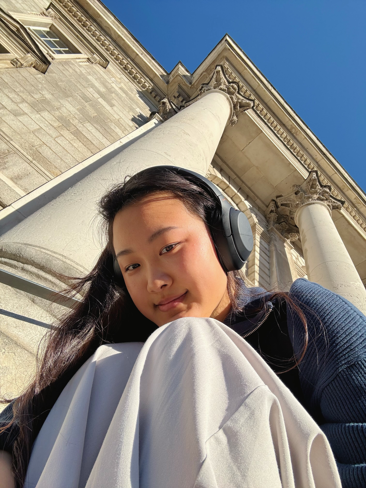
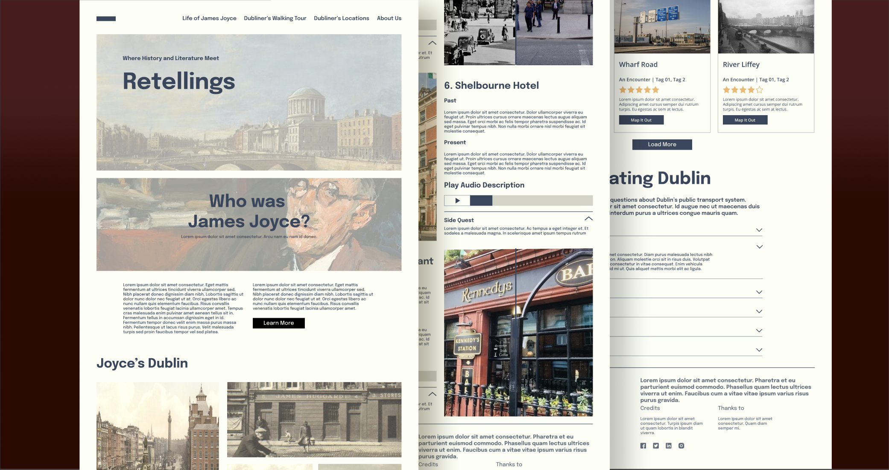
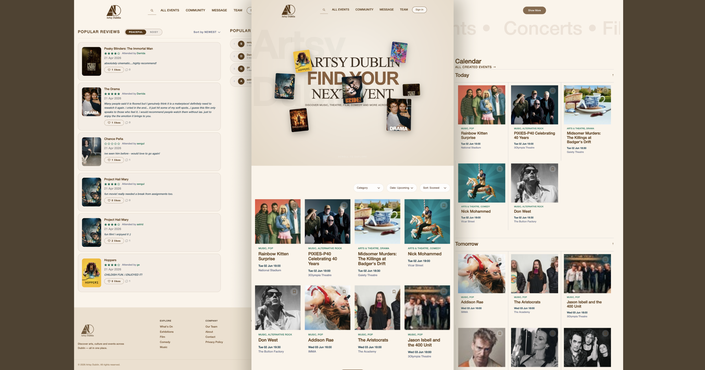
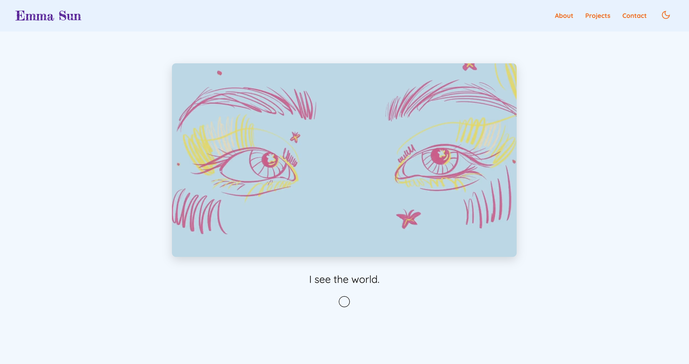
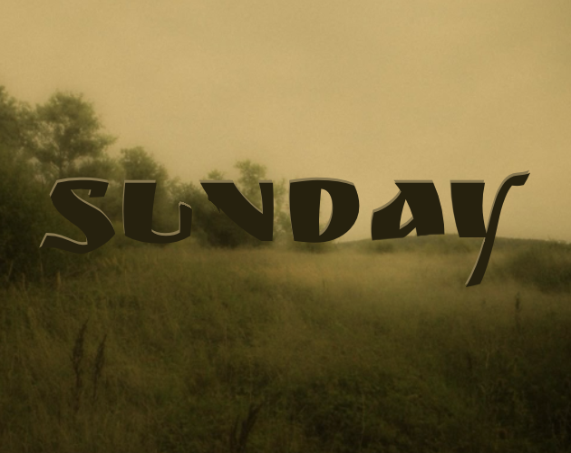
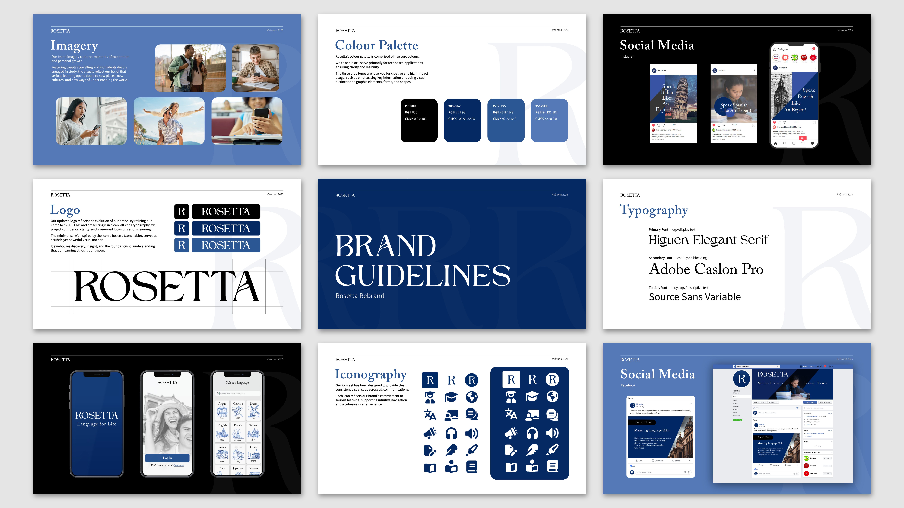
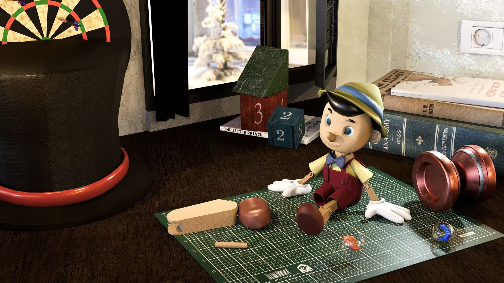
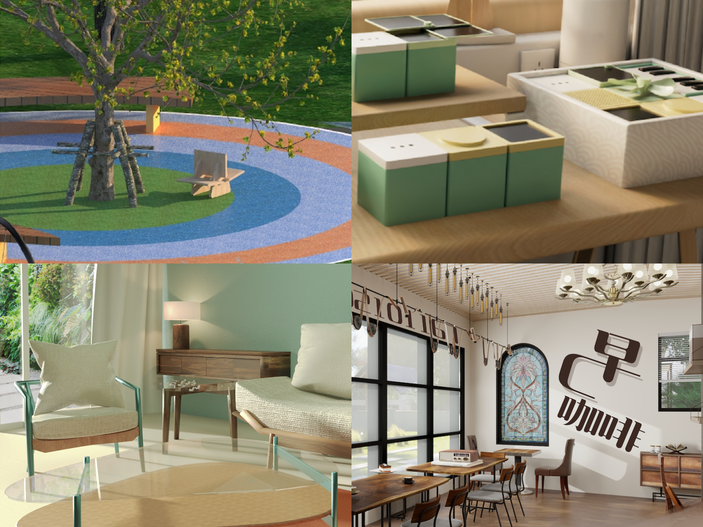

I turn ideas into clear, usable
digital experiences.

Selected work
Projects

Retellings - Dubliners (on-going)
Inspired by Dubliners, James Joyce, we developed Retellings as a space for the bookworms, history buffs and travellers who want to look beyond the surface of the city.

Artsy Dublin (on-going)
A technical showcase of API integration, theme persistence, and scroll-driven interaction.

Portfolio Engine
A technical showcase of API integration, theme persistence, and scroll-driven interaction.

Story Narrative (Twine)
An interactive branching story built with complex variable-driven logic.

Rosetta Rebrand
A comprehensive brand identity overhaul across digital and social platforms.

Pinocchio
Exploring graphic hierarchy through 3D modeling and typographic layout.

Spatial & Product Design
A curated collection of my 3D explorations, ranging from flexible educational furniture systems to narrative-driven museum layouts and optimized interior renderings.
Processing Works
A collection of five creative coding sketches exploring image transformation, interaction, generative visuals, and playful computational experiments.
I design through the five senses
Influenced by architect Kengo Kuma, I believe technology should not be a barrier, but a bridge that resonates with human nature. I leverage the five senses to translate complex user psychology into tangible digital realities—from the tactile rhythm of my code to the atmospheric depth of 3D spaces. I believe in "Design for a better world".
Interaction & UX
Sculpting intuitive spatial rhythms. I treat the digital journey as an architectural procession, focusing on flow, accessibility, and empathetic user research to reduce cognitive friction.
3D & Spatial
Building sensory immersion. I create high-fidelity assets where light, shadow, and texture combine to give digital environments a physical presence and a sense of "place."
Visual Narratives
Synthesizing material stories. Using compositional hierarchy and materiality to turn complex data into compelling, human-scale visual experiences that speak to the user's intuition.